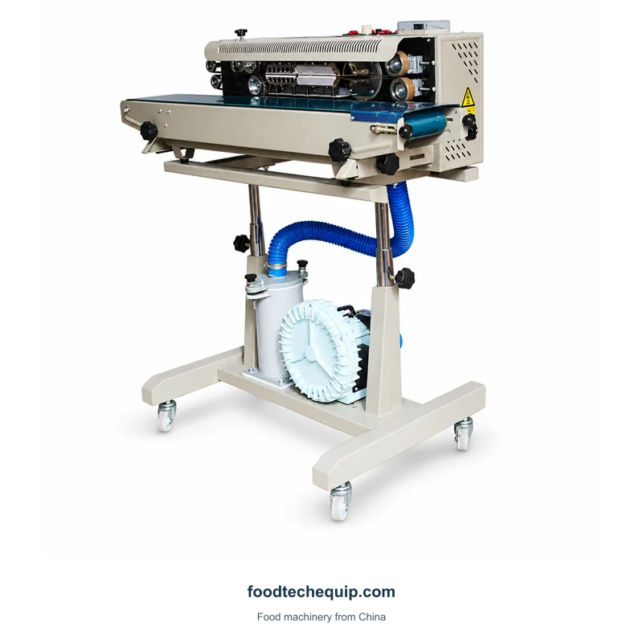

画像を選択すると拡大して表示されます。
袋のシール
ガス置換式連続バンドシーラー
ガス供給接続部と下部ブロワーを備えたコンベア付き連続式バンドシーラーです。
- シール能力DBF1000
- 12～18パック/分
- シール能力DBF1000A
- 20 ～ 40 パック/分
設備選定・据付の案内・遠隔サポート
製品情報をご覧ください ↓この機器をワークフローに組み込むことを計画する
見積書内の DBF1000 構成と DBF1000A 構成を区別してください。バッグのサイズ、充填状態、および意図されたガス処理プロセスについて説明します。シール率は構成によって異なります。
バッグまたはチューブのシールプロセスの選択 ↗仕様と構成
| 仕様項目 | 値 | 単位 | 構成 |
|---|---|---|---|
| シール能力 | 12-18 | 個/分 | DBF1000 |
| シール能力 | 20-40 | 個/分 | DBF1000A |
このタスクがプロセスに適合する場所
中身が入ったバッグとその支持位置から始めます。必要な操作が見積書に含まれるように、個別の分割または真空処理の要件を含めてください。
設備の要件をお知らせください
- 中身を詰めたバッグの寸法と重量
- 必要なシーケンスとバッグの構造
- 支えの位置とヘッドスペース
- 対象の構成: DBF1000、DBF1000A
- 意図したパック形式での必要な出力
- 使用する電源と納入先
探検を続けましょう
カテゴリを表示このカテゴリのその他の機器